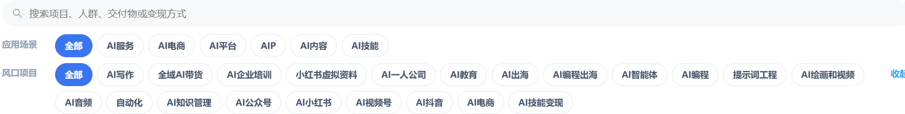

为自己，积累下一种可能
想用 AI 做副业，
先从一个具体项目开始。
想增加收入，却不知道先学什么、先做什么？从一个真实需求出发，了解具体的实践方向，做出作品、验证需求，逐步积累自己的能力与机会。
这里整理了 AI 实战内容的参考方向，也提供7天免费体验的专属邀请。先了解，再判断是否适合自己。
从一个具体问题开始，让今天的行动留下积累。
先看看，你可以从哪些方向开始。
选一个与你的能力和需求接近的方向，
再考虑是否深入学习。
以上项目方向与封面来自社群官网资料。具体活动安排和体验权限以实际领取流程为准。
花7天，看看这里的内容
是否值得你继续学习。
工具更新很快，真正值得积累的，是把工具用到具体事情里的方法。
先了解不同方向涉及的需求、作品与交付方式，再参考具体过程和经验，判断什么值得投入时间。
实战方向与项目参考
从网站、小工具到内容与服务，了解不同方向需要解决什么问题。
实战分享与复盘内容
参考实践过程与经验，把学习放回具体需求里，少一些独自摸索。
7天会员体验 + 3天新手课程
通过专属邀请先体验内容与学习方式，判断是否适合自己的阶段。

精选内容预览
想进一步阅读和实践，可以通过下方专属邀请领取7天体验。
先体验7天，再决定是否继续。
通过我的专属邀请，领取7天免费会员体验，
看看内容与学习方式是否适合你。
扫码添加客服微信
由客服协助开通7天体验
扫码添加微信。
点击可放大；手机可长按图片保存，
再在微信中识别二维码。
先看内容，
给自己一个实践的起点。
扫描我的专属邀请码，添加客服微信，由客服协助开通7天体验。也可以通过下方邀请链接，按照实际页面指引完成领取。
此链接是专属推广邀请入口，领取与开通以实际流程为准。
本站提供专属推广邀请，是否继续付费由你在体验后自行决定。
带着一个问题进去，
比漫无目的地看更有用。
适合想了解 AI 实践方向、愿意动手做小项目，并希望参考真实内容的人。
如果期待加入后就自动获得收入，建议先调整预期。机会需要真实需求、持续实践与可靠交付。
没有编程基础，可以了解吗？+
可以先了解不同项目涉及的工具和技能，再选前置条件适合自己的方向。涉及编程、部署或服务交付的项目，需要相应学习与实践。
7天体验怎么开通？+
通过专属二维码添加客服微信，由客服协助开通；直接邀请链接按实际页面流程办理。打开链接或展示二维码不等于已经开通。
需要先买服务器吗？+
先明确项目需求。纯静态页面可使用静态托管；需要常驻任务、自定义后端等能力时，再考虑服务器。
应该先选哪个项目？+
从你熟悉的人群和具体问题开始。先了解所需技能，选择能完成的小范围作品，再收集真实反馈。项目方向是参考，不是收入承诺。
做出的项目，
需要一个持续运行的地方。
当你准备把网站真正上线、让应用随时可以访问，或者让自动化任务在电脑关机后继续运行，再根据需求比较部署方案。
第一次实践，可以先比较新用户优惠，用较低成本开始。购买前一起看清续费价格、地域、带宽和流量规则，避免只看首年价格。
产品页面价格可能有变动，具体价格与优惠以活动页面为准。 新用户购买产品价格通常较便宜，非常划算。
简单网站也可选择静态托管。香港或海外方案重点比较亿速云与 UCloud 的地域、线路和总成本，实际能力及优惠以服务商说明为准。
还没想好从哪里开始？
选一个你现在最想完成的目标。
网站理念为什么把时间花在能留下积累的事情上？
为什么把时间花在能留下积累的事情上？
一年以后，你希望自己只是又忙了一年，还是多了一份属于自己的底气？
你可能已经很努力了。认真上班，忙着生活，也想过学一项技能、做一个项目，让收入多一点，让日子宽裕一点。
可每天忙完，那些真正想做的事，总被推到“以后”。
值得停下来想一想的是：
今天做的事情，有多少能留下来，让明天的你走得更容易？
一项技能、一个网站、一个实用工具、一批信任你的客户，都可能成为下一次机会的起点。
你不必马上辞职，也不必投入一大笔钱。借助 AI 和互联网，从一个具体需求开始，做出有人需要的结果，验证一条属于自己的收入路径。
先解决一个问题，再赢得一份信任；先跑通一次，再想办法重复。
让今天的努力，成为明天的积累。